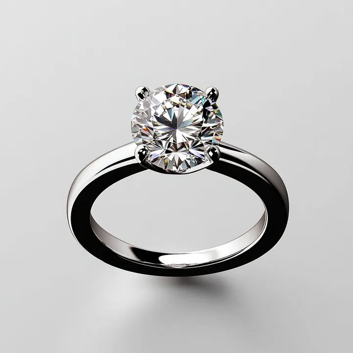

奶咖綠鑽石：證書上不會寫的三個字
有種鑽石，證書上 4C 全漂亮、價格卻只要七折——因為它帶了三個證書不寫的字：奶、咖、綠。

核心定義
「奶、咖、綠」是華人珠寶市場對三種鑽石體質的俗稱，GIA 等國際證書大多不單獨標示，卻實實在在影響價格與美觀。奶（milky）指鑽石像牛奶一樣白濛濛、透明度下降；咖（brown）指帶棕色調；綠（green）指帶不該有的綠色調——三者常結伴出現，被合稱「奶咖綠」。
為什麼證書不寫？因為 4C 分級系統的量測邏輯（色階、淨度）捕捉不到這些「色調之外」的特徵；它們屬於「體質」問題，要靠鑑定師口頭描述與肉眼判斷。這也讓奶咖綠成為資訊不對稱的溫床——不懂的人，買到打折品還以為撿到寶。
特徵與分類
| 特徵 | 肉眼表現 | 成因方向 |
|---|---|---|
| 奶 milky | 白濛、透明度低、火彩悶 | 密集亞微米級內含物散射光線 |
| 咖 brown | 整顆帶棕/咖啡色調 | 氮與晶格缺陷的組合 |
| 綠 green | 帶不自然綠色調 | 輻射/放射照射造成晶格缺陷 |
奶是最傷的一種：它讓鑽石的亮光與火彩全面「熄火」，即使克拉大、色階高，看起來也像霧裡看花。咖與綠則更多是「色調干擾」，在色階低時不明顯，在高色階時特別刺眼。
科學原理
奶感的科學根源是「內含物密度」：當鑽石內含大量極細小的晶體群或雲狀物（cloud），這些亞微米顆粒會像霧霾一樣散射光線，讓鑽石失去透明感。有趣的是，這些顆粒小到不影響淨度等級，卻足以毀掉光學表現。
綠色調常與天然輻射有關：鈾礦等放射性礦物附近形成的鑽石，晶格受輻射撞擊產生缺陷，吸收特定波長光，呈現綠色調。咖色調則多與氮、氫等雜質的複合缺陷相關。
鑑定與鑑別方法
- 在白紙、白光下翻轉觀察：奶鑽的白濛與正常鑽的剔透差異明顯
- 把鑽石側放，從亭部觀察體色是否夾帶棕/綠
- 比較「火彩」：奶鑽火彩明顯偏悶
- 用同色階的正常鑽石並排對比（最有效）
- 要求賣家提供實物檢視，證書不保證「不奶」
- 送實驗室做光譜/顯微檢查確認咖綠來源
市場行情與保養建議
奶咖綠鑽石在市場上通常以明顯折扣出售——奶鑽有時低至同級正常鑽的六到八折，咖綠視程度議價。對賣家是清庫存，對懂行買家可以是「低價自戴」的選擇，但前提是你清楚自己在買什麼。
自戴買奶咖綠，要接受火彩悶與轉手貶值；投資收藏則應完全避開——因為無證書標示，賣出時難以證明「不奶」，流通性大減。
常見誤區
4C 是分級系統，不是品質保證書。奶咖綠正是證書的盲區——一顆 GIA 認證的 F/VS 鑽石，完全可能是奶鑽。證書之外，眼睛才是最後一道關。
褐色調（咖）與彩鑽的「fancy brown」是兩回事：前者是白鑽的「污染」，被視為扣分；後者是有認證的彩鑽品類。別把貶值當增值。
冷知識
造成奶感的雲狀內含物若分布均勻、對比度低，鑑定師可能不將它降級——所以一顆 VS1 的鑽石也可以是奶鑽。這正是奶鑽最陰險的地方。
天然綠鑽的綠色有些來自鑽石形成後附近放射性礦物的長期照射。地質學家甚至用綠色分布推斷鑽石的「輻射歷史」。
反直覺觀點
奶咖綠證明「分級漂亮 ≠ 品質漂亮」。高色階高淨度碰上奶體質，光學表現直接打對折——買鑽石最終買的是「眼睛看到的」，不是證書上的字母。
珠寶店黃色射燈會掩蓋咖色調與奶感。把鑽石拿到窗邊自然光、或白光檯燈下再看，才見真章——看奶咖綠，永遠要看「白光源」。其實所有寶石都該如此。